재미로 읽는 경항모 이야기 (2)
게시: 2020-11-26T06:30:10+09:00
<항모와 아이스크림 기계> 보그(Bogue)급 호위항모(CVE)는 WWII 초기에 미국에서 상선을 기반으로 생산하여 lend-lease 프로그램 하에 영국해군에게 넘겨준 것. 이들은 영국 해군에서는 이를 어태커(Attacker)급 항모로 분류하여 수송선단 호송용으로 사용. 당시 미해군은 금주법 시대의 잔재가 아직 남아서 수병들에게 술이 지급되지 않는 dry ship의 전통이 있었고, 술이 없으면 단 것이 땡기는 사람 심리에 따라 대신 아이스크림 만드는 기계도 있었고 대형 세탁기까지 딸려 있었음. 그러나 그록(grog)이 life blood였던 영국 해군에서는 이 보그급 호위항모를 인수할 때 '남자라면 그록이지 뭔 애들처럼 아이스크림이냐' 라며 아이스크림 제조기를 제거. 또한 '영국 수병은 양동이 1개와 비누 1장이면 몸과 옷을 깨끗이 할 수 있다' 라며 세탁기도 제거. 사진은 미해군에서 USS Breton (CVE-10) 불렸으나 영국 해군으로 넘겨져 HMS Chaser로 불린 1만4천톤 짜리 호위항모. 호위항모(CVE)와 경항모(CVL)의 가장 큰 차이는 속도. 호위항모는 상선을 기반으로 만든 것이라 18~19노트가 최고 속도였으나 경항모는 순양함을 기반으로 만든 것이라 30노트의 속도를 넘기는 것도 많았음. 속도가 느리면 다른 군함들을 쫓아가질 못해서 본연의 임무를 수행할 수가 없음.
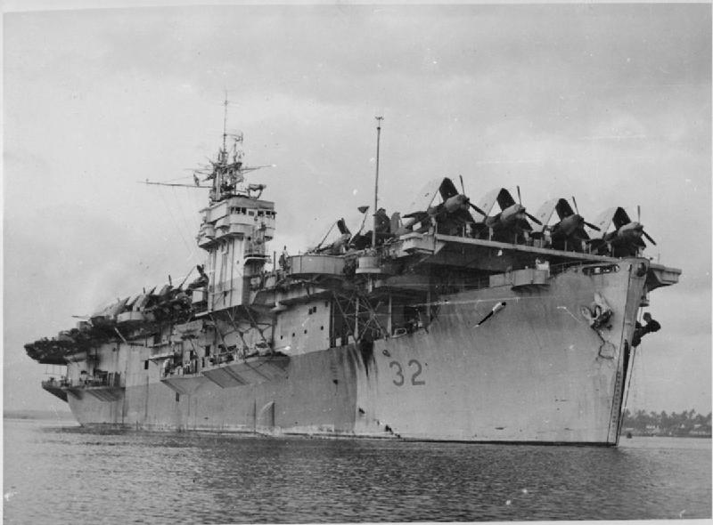
<북한 상공의 스핏파이어> 북한 상공에 Spitfire가 날아다닌 적이 있었나? 있었음. 1950년 7월 3일, 한국 전쟁 개전 직후 최초의 폭격이던 평양과 해주의 북한 비행장 공습에 참여한 항공기들 중에는 황해로 출동한 영국 해군 Colossus급 1만4천톤짜리 경항모 HMS Triumph에서 날아오른 Seafire와 Firefly들이 있었음. 이들은 계속 황해에 머무르며 나중에 인천상륙작전까지 지원.
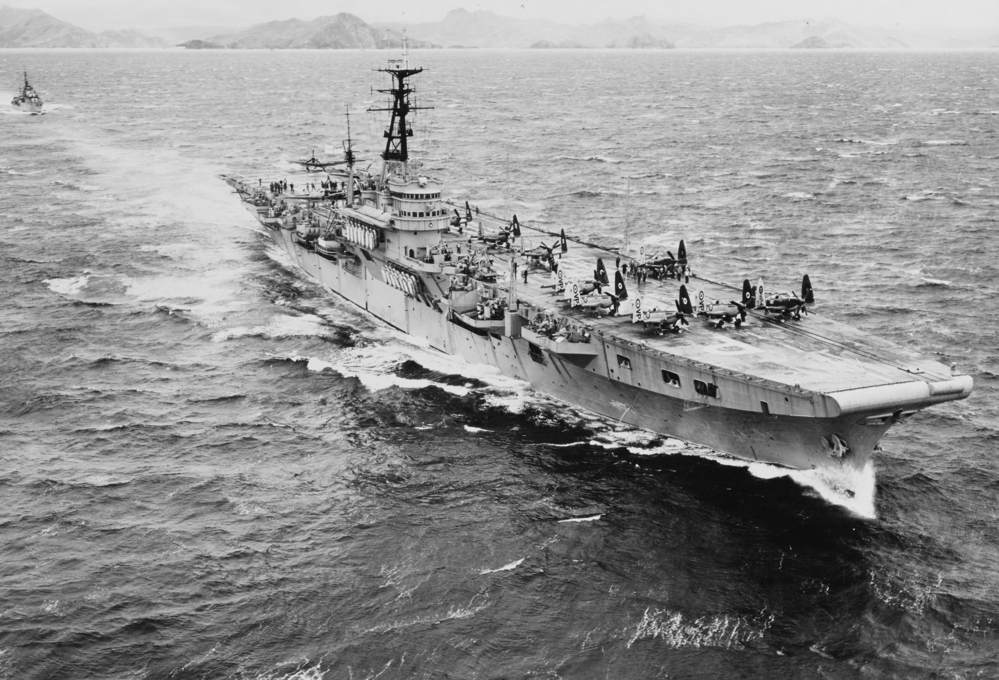 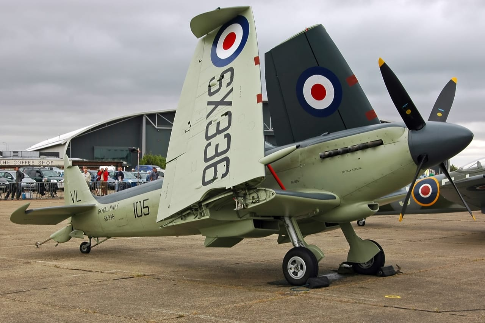
<함재기가 끌어준 항모> 네덜란드 해군 경항모 HNLMS Karel Doorman. 1만8천톤, 24노트. 원래 1943년 진수된 영국 경항모 HMS Venerable이었는데 전후 네덜란드로 매각되어 카렐 도어만이 됨. 1962년 식민지이던 서부 뉴기니가 독립할 때 인도네시아에 대한 무력시위를 위해 파견. 먼저 호주에 들렀으나 호주 선원 노조가 인도네시아에 동조하며 파업, 예인선 서비스를 못받음. 어쩔 수 없이 갑판에 쇠사슬로 고정된 항공기의 프로펠러 추진력을 이용해 옆걸음질쳐서 접안하는 눈물의 쇼우를 보여줌.
사실 네덜란드 해군이 보여준 이 기발함은 오리지널한 것은 아니고, 1952년 겨울, 한국 전쟁 때 동해안에서 폭격 임무를 마치고 일본 요코수카 항의 드라이독에 들어가던 미해군 에섹스급 정규항모 USS Valley Forge (CVA-45)에서 먼저 수행했던 것. 그때 Vought F4U-4 Corsair과 A-1 Skyraider들을 밸리포지의 좌현쪽에 단단히 고정시킨 뒤 일제히 프로펠러를 가동하여 예인선이 항모를 드라이독에 접안시키는 것을 도왔다고. 다만 그렇게 고정된 상태에서 엔진을 사용하면 (비행 중인 상태처럼 공기가 쏟아져 들어오는 것이 아니므로) 엔진에 큰 무리가 가기 때문에 당시 조종사들은 모두 엔진 파워를 절반만 냈다고. (아래 세번째 사진)
아래 첫번째 사진 속 갑판 위에 즐비한 함재기는 네덜란드 마크를 붙인 영국제 함재 전투기-대잠기 Firefly (아래 두번째 사진). 망망대해 상에서의 네비게이션이 꽤 어렵기 때문에 조종사 + 관측 및 항법사로 전투기인데도 2인승으로 개발됨. 실제로 1962년 서부 뉴기니 분쟁 때 인도네시아군에 맞서 네덜란드는 저 파이어플라이를 출격시킴. 참고로 당시 인도네시아는 소련의 지원으로 Mig-21로 무장하고 있었음. 다행히 곧 휴전이 되어 공중전은 벌어지지 않음. (1965년 인도네시아 해군은 소련의 집중 지원 덕분에 순양함 1척과 잠수함 12척, 구축함/프리깃함 16척을 보유하여 중국 해군에 이어 동부 아시아에서 2위의 규모였음.)
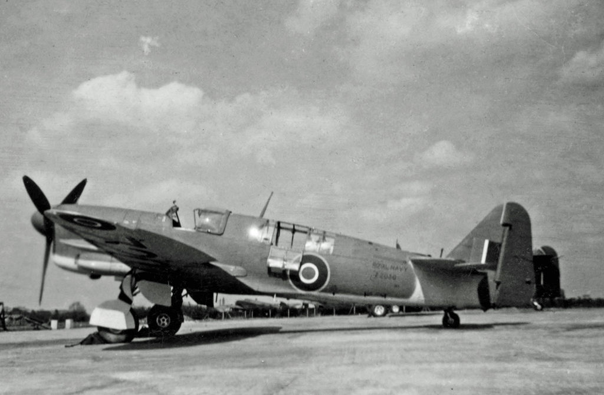 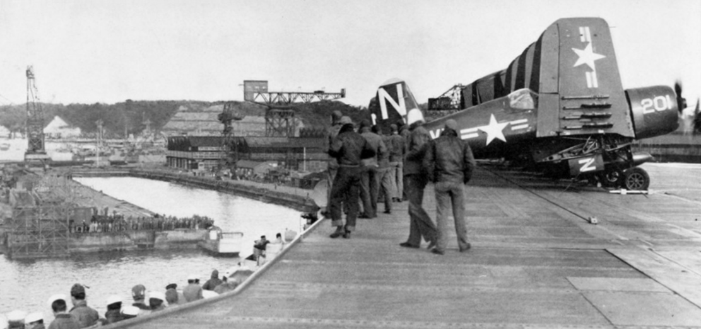
<도쿄 만에 들어간 최초의 미해군 항모> 1944년 12월 18일, 미해군 함대를 박살낸 유명한 태풍 '코브라' 와중의 USS Cowpens (1만1천톤급 경항모). 이런 태풍이면 고참 수병들도 멀미로 아침에 먹은 것을 게워내는데 신참 수병들은 너무 무서워서 멀미도 안 난다고. 카우펜스는 무척 잘 대처해서 1명 사망에 비행기 몇 대, 장비 일부를 상실하고 무사히 울리티 기지로 귀환하여 수리를 받음. 카우펜스는 나중에 일본 항복 이후 도쿄 만에 처음으로 들어간 미해군 항모였고, 일본 본토에 처음 상륙한 미군도 이 카우펜스로부터 상륙한 것이었음. 전함 미주리(USS Missouri)의 승조원들은 자함을 자랑스럽게 생각하여 Mighty Mo 라고 애칭을 붙였는데 카우펜스의 승조원들도 자함을 자랑스럽게 생각하여 Mighty Moo 라고 불렀음 (음메~)
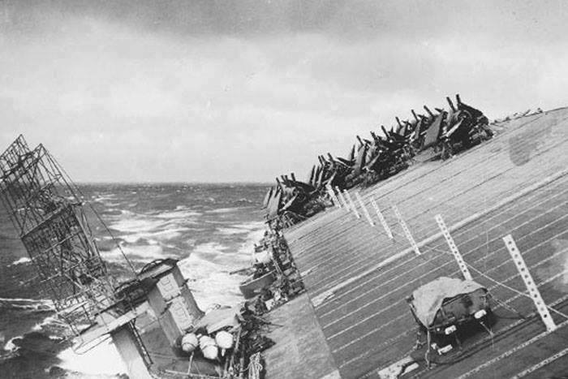 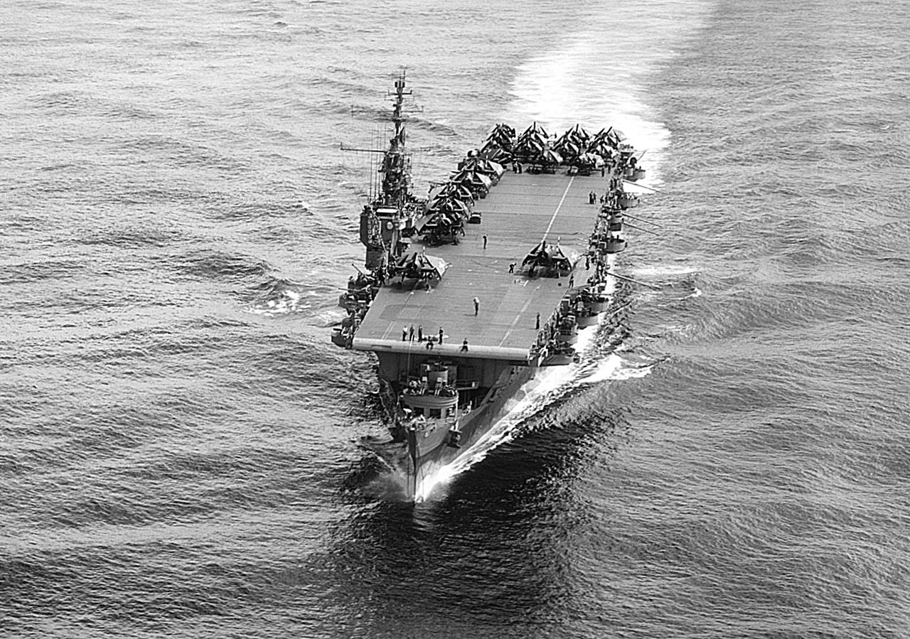
<가미가제의 의해 침몰한 최초의 대형군함> Casablanca급 호위항모 USS St. Lo (CVE–63). 1만톤급, 19노트, 함재기 27대, 1943년 진수. 가미가제 공격으로 침몰한 최초의 대형 군함. 1944년 10월 레이테만 해전에서 일본 순양함대와 딱 부딪히는 낭패를 당한 뒤 가진 함재기를 긴급히 다 띄워 싸우게 한 뒤 딱 1문 있는 5인치 포로 일본 순양함과 포격전을 벌이며 분투. 워낙 긴급 발진하는 바람에 일부 함재기는 대잠수함용 폭뢰를 장착한 채 순양함들과 싸우러 출격. 미해군 호위 구축함들의 효율적인 연막 덕분에 의외로 잘 버티다 결국 작은 폭탄을 장착한 제로센의 가미가제 공격을 당하고 격납고의 항공유와 폭탄이 유폭되어 침몰. 아래 사진이 그 폭발 순간.
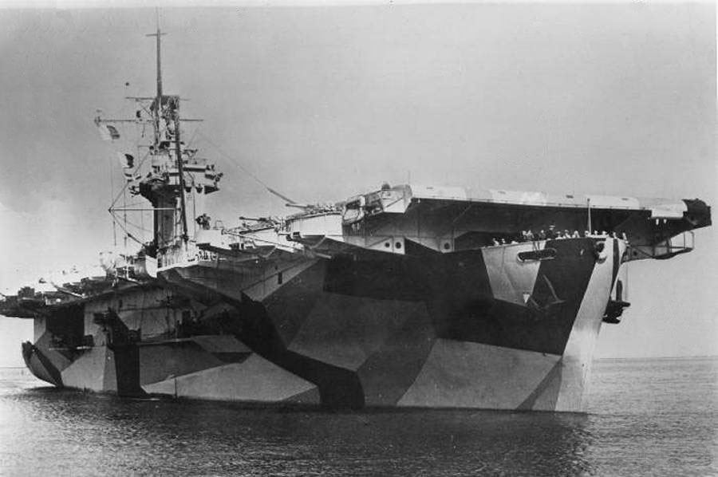 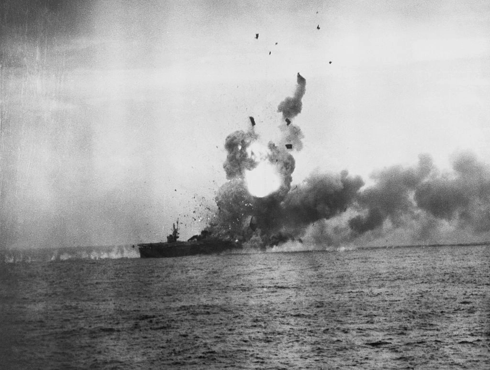
<항모의 천적 - 잠수함> HMS Ark Royal, 1937년 진수, 2만7천톤, 30노트. 영국 해군성에서는 아크로열의 비행갑판에 장갑이 없어서 폭탄 한방에 피해가 극심할 거라고 노심초사했으나 정작 아크로열의 최후는 하늘 위가 아닌 물 밑. U보트의 어뢰 딱 1방을 맞고 비틀거리다 다음날 전복되며 침몰. 사후 조사 결과 아크로열의 침몰 원인은 비상용 전원이 없었기 때문. 이때 사망자는 어뢰 폭발을 직격 당한 수병 딱 1명.
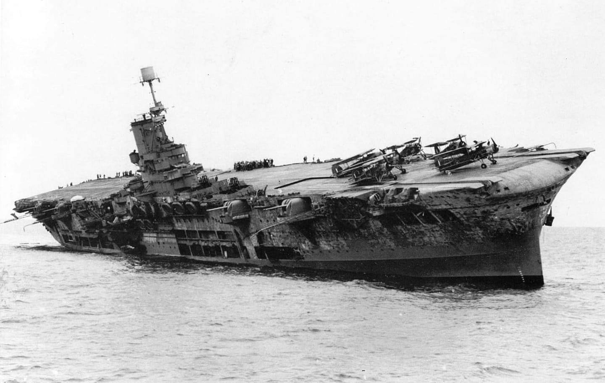
HMS Courageous. 1916년 진수된 전투순양함을 1924년 항모로 개조. 2만7천톤, 30노트, 함재기 48대. 물론 어뢰방어용 벌크헤드도 붙이고 있었으나 1939년 9월 아일랜드 인근 순찰 중 하필 모든 함재기가 착함한 상태에서 2시간 동안 몰래 따라다니던 U보트가 발사한 어뢰 3발 중 2발에 피격. 삽시간에 모든 전원이 down 되며 배수펌프도 못 쓰는 바람에 20분만에 전복, 침몰.
코레이져스의 침몰에서 얻은 결론은 크게 2가지. 1) CAP은 한시라도 빼지말고 언제나 띄워둬라 2) 전기 나가면 죽는다, 비상용 전원 필수
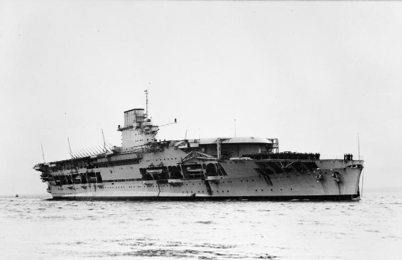
(경항모는 아니지만) 1942년 9월, 과달카날에 해병대 지원군을 호송하고 돌아가던 미해군 기동부대 중 항모 USS Wasp를 겨냥하고 일본 잠수함 I-19가 어뢰 6발을 일제 발사. 부채살 모양으로 발사된 어뢰 6발 중 3발은 14시45분에 Wasp에 명중. Wasp의 이물 쪽으로 빗나간 어뢰 2발 중 1발은 6분 뒤 함대 내의 구축함 O'Brien에 명중. Wasp의 고물 쪽으로 빗나간 한발은 다시 1분 뒤 전함 North Carolina에 명중. 그야말로 잭팟. 결국 Wasp는 항공유 누출로 대화재를 일으켜 자침되었는데, 이때 함상에 있다가 바다로 뛰어든 Camliss 소령의 회고에 따르면 미해군 수병들의 여유가... 폭발과 화재가 이어지는 와중에도 함교의 수병들은 최근 잔뜩 실은 신선한 달걀 못 먹게 되어 어떡하냐 라고 한탄. 불타는 항모를 옆에 끼고 기름으로 뒤덮힌 바닷물 속에서 허우적거리고 있는데 한 수병이 헤엄쳐 다가 오더니 '소령님, 옷깃에 계급장이 떨어지려고 합니다'라고 알려주고 가더라고. 캠리스 소령은 우현으로 뛰어내렸다고 했으니 아래 사진에서 연기 없는 쪽임. 그래서 여유가 있었던 듯.
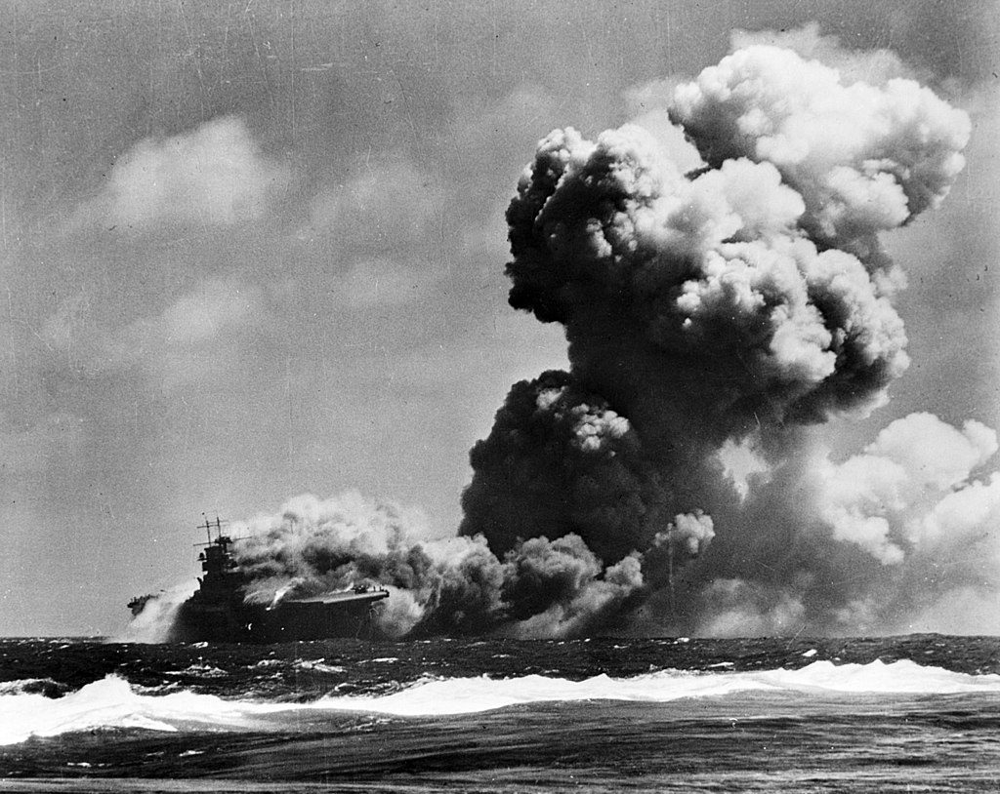
2007년 카리브해에서 벌어진 훈련에서 독일해군 잠수함 U24이 가드 돌파하고 어뢰 발사 위치 확보하고 촬영한 USS Enterprise. 한국 해군도 림팩에서 이걸 해낸 바 있었지만 이때도 독일 잠수함 왈 '별로 어렵지 않았다'. 실제로 항모는 잠수함에게 매우 취약하며, 특히 조용한 디젤 잠수함으로부터 살아남는 방법은 망망대해 위를 떠돌며 절대 주요 해안가나 섬, 해협 등에 접근하지 않는 것.
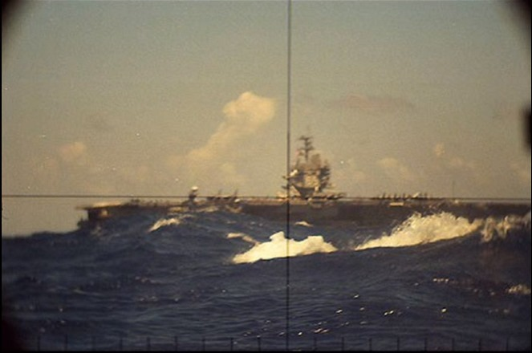
<잠수함의 천적 - 함재 대잠기> 미국으로부터 영국, 그리고 영국으로부터 소련으로 이어지는 군수물자 수송선단의 보호가 WWII 승리의 가장 중요한 관건. 그리고 이들을 노렸던 것은 독일 해군의 샤른호스트(Scharnhorst)나 비스마르크(Bismarck) 같은 전함들도 있었으나 주로 독일 U-boat. 이런 U-boat를 잡는데 가장 큰 공을 세운 것이 바로 소형 호위항모. 호위항모에는 보통 전투기 1/3, 그리고 폭격기 2/3를 실었는데, 전투기도 실었던 이유는 아래 사진과 같은 독일 공군 Ju 290과 같은 장거리 정찰폭격기 때문. 잠수함은 발견하기도 어렵지만 스스로 수상 목표물을 찾는 것도 어려움. 게다가 찾는다고 해도 속도가 너무 느려서 느린 수송선단조차 따라잡는 것이 극히 어려움. 따라서 잠수함으로 수송선단을 잡으려면 정찰기와 긴밀히 연락하며 미리 수송선단의 항로에 미리 매복하고 기다려야 함. 그런데 호위항모의 전투기들이 이런 독일 장거리 정찰 폭격기를 격추시키거나 그 활동을 위축시켜 독일 유보트의 사냥 성공률이 크게 떨어짐.
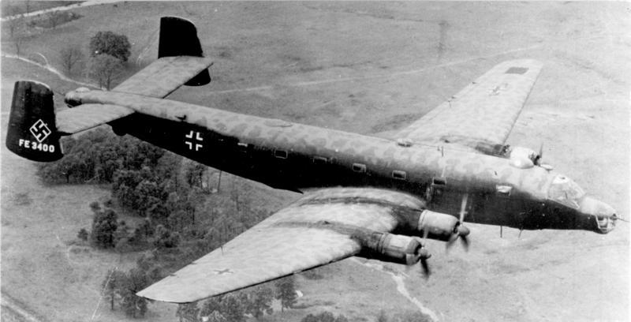
보통 수송선단에는 2척의 호위항모가 붙었는데, 1척에는 구닥다리 복엽 뇌격기인 Fairey Swordfish와 전투기를, 다른 1척에는 미제 신형 뇌격기인 Grumman Avenger와 전투기를 실었음. 이유는 신형 어벤저가 훨씬 더 멀리 그리고 더 빨리 날아다니며 주간 초계비행을 할 수 있었고, 복엽 뇌격기인 소드피쉬는 느리지만 air-to-surface vessel (ASV)를 장착하고 야간 초계비행을 할 수 있었기 때문. 왜 한척에 소드피쉬와 어벤저를 섞어서 탑재하지 않느냐는 질문이 있을 수 있는데, 이유는 비행갑판 통제요원들의 숙련도 때문. 당시엔 급히 호위항모를 마구마구 찍어냈기 때문에 당연히 조종사도 비행갑판 요원도 숙련도가 많이 떨어졌는데, 그러다보니 가급적이면 활주거리나 비행 특성 등에 있어서 각기 다른 여러 종류의 기체를 섞어서 받지 않고 한 종류만 받는 것이 유리했다고.
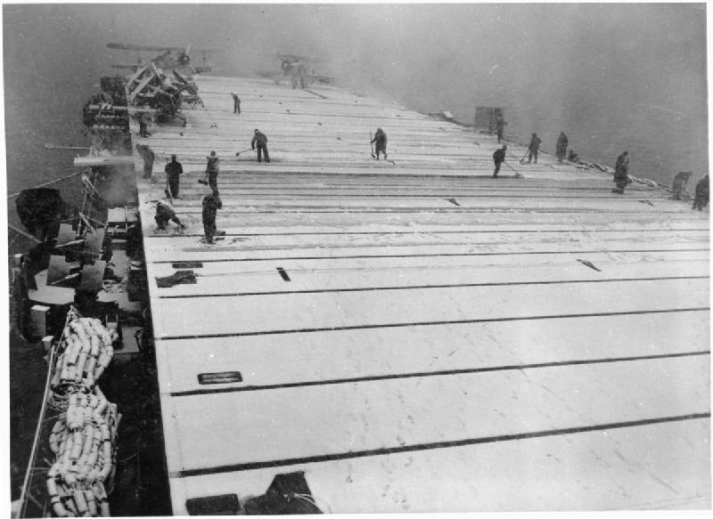
(1944년 5월, 영국과 소련 무르만스크 항구를 오가는 수송선단을 호위하는 HMS Fencer 위에 내린 눈과 그걸 치우는 수병들... 제설 작업은 때와 장소를 가리지 않습니다. 갑판 끝에는 소드피쉬 복엽기들이 보입니다.)
Swordfish 뇌격기의 날개살에 가로로 붙은 막대기가 ASV(Air-to-Surface Vessel) 항공기용 수상탐지 레이더의 안테나. 원래는 영국 본토를 야간 폭격하는 독일 폭격기들을 탐지하기 위해 air-to-air 레이더를 연구 실험하다가 항공기 탐지는 젬병이지만 멀리 떨어진 선박들은 꽤 잘 잡아내는 것을 알게 되어 개발.
Air-to-Surface로 개발 방향을 돌린 목적은 이걸 이용해서 슈노클이나 잠망경을 수면 밖으로 빼꼼히 내놓은 독일 U-보트를 항공기로 쉽게 잡아내려고 한 건데, 그게 또 잘 안 됨. 그래도 굴하지 않고 '야간이나 먹구름이 잔뜩 낀 바다에서 적함을 찾을 수 있지 않겠냐' 라며 Swordfish 등 폭격기에 장착했는데, 정말 1941년 5월 구름이 잔뜩 낀 바다 위에서 이걸로 독일 전함 비스마르크를 찾아내 어뢰로 공격, 결국 그 덕분에 격침에 성공. 나중에 품질이 개선되면서 U-보트들을 이걸로 찾아내 족족 격침.
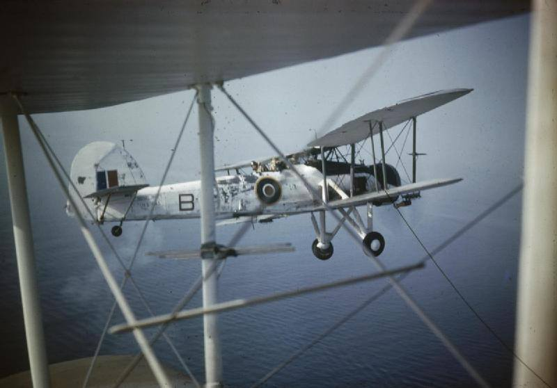
<보너스 샷>
이건 경항모 이야기는 아니지만, USS Ronald Reagan의 home port가 변경될 때 승조원들의 개인 차량을 새로운 모항으로 옮기는 장면. 희한한 사진이라 퍼왔어요. 출처는 페북의 CARRIERS 라는 커뮤니티.
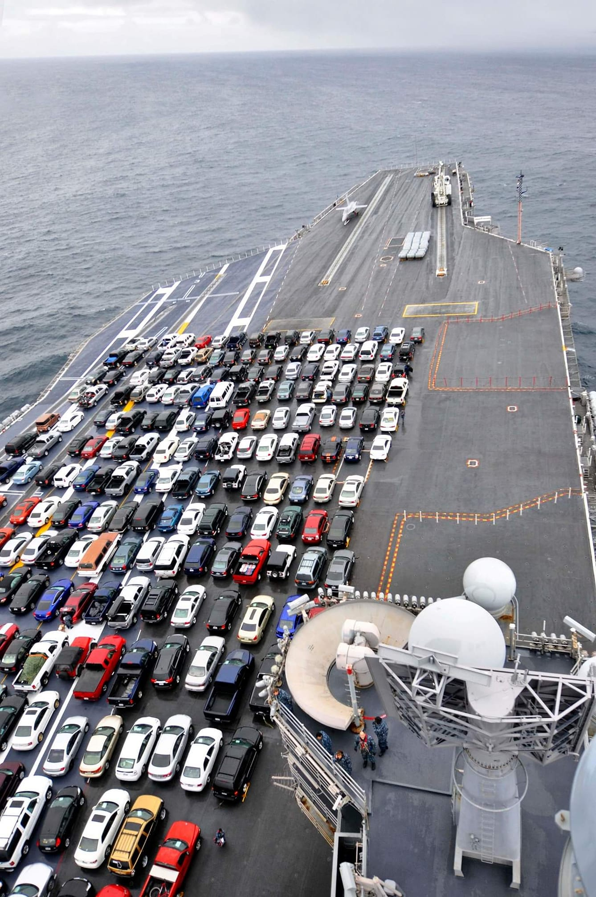
** 대부분의 사진과 스토리는 위키피디아에서 가져온 것입니다.